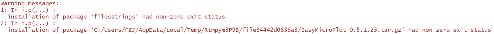
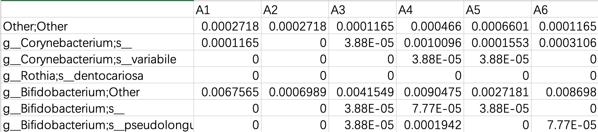
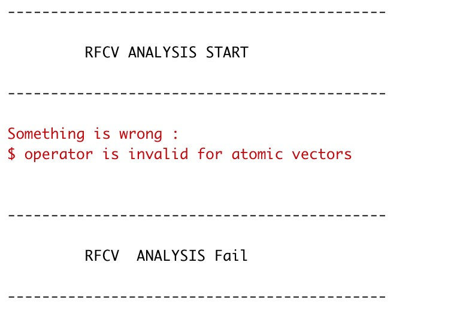

常见问题及解决方法
本章节归纳了EMP包用户的常见问题。
1. EMP安装时提示filesstrings 出现none-zero exit status错误
问题再现：

解决方法：
这是由于filesstrings包在安装时需要编译导致，用户可以手动预先安装包，再进行EMP的安装
install.packages('filesstrings',type = 'binary') # 这里一定要选择binary模式
library(filesstrings) # 再次加载确认filesstrings安装成功
remotes::install_github("https://github.com/xielab2017/EasyMicroPlot",subdir='Version_0.5') # 重新安装EMP包
2. 运行数据时发现EMP无法正常识别出数据的物种级别
问题再现：

解决方法：
这是因为EMP包是根据;来自动识别数据的分级信息，建议用户至少补全前五行的全部注释信息。如果无法补全，需注意EMP可能将此数据识别为错误级别，但是不妨碍下游计算，例如以上示例将识别为门级别。
3. 运行EMP_MICRO时出现结果文件已占用错误
问题再现：

解决方法：
这是因为在R工作区域中已经生成了相同命名的Result结果文件夹,可以在EMP_MICRO中的参数output_folder设置一个新的输出结果文件夹（例如output_folder = Result02），或者在本地删除已经存在的结果文件夹。